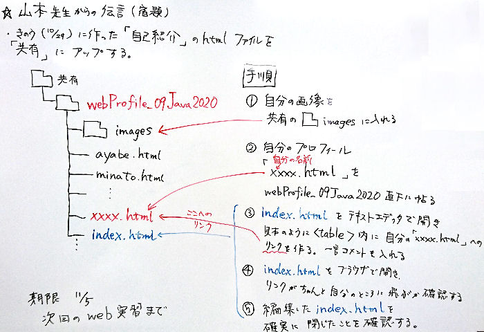

＊リンク <a href="URL">文字列</a>
<a>タグのことを「a タグ」「アンカータグ」と言います。
リンクを作るために使います。
リンク先に URLを指定すると外部サイトに飛びます。
相対パスを指定すると自分のＰＣ内の別ファイルに飛び、
id を付けると ページ内の移動にも使えます。(ページ内リンクは後述)
〔例〕
＊URLを指定:
<a href="https://sozosha-rs.jp/">創造社リカレントスクール</a>
↓
創造社リカレントスクール
https://sozosha-rs.jp/
リンクアウト(= リンクが つながらない)ときのために 隠したURLも付けてあげましょう。
こうすると事前にどこへ飛ぶのか判り親切なリンクにもなります。
文字で代替せずに、このように表示することも可能です。
<a href="https://sozosha-rs.jp/">https://sozosha-rs.jp/</a>
↓
◇創造社リカレントスクール
https://sozosha-rs.jp/
＊相対パスを指定
<a href="index.html">index.html</a>
↓
◇webProfile_09Java2020
index.html
|
＊文字装飾とレイアウト
いろいろな文字装飾です。ブラウザによっては反映されないタグもあります。
・太字
<b>太字</b> ⇒
太字
・斜体
<i>斜体</i> ⇒
斜体
・下線
<u>下線</u> ⇒
下線
・取消
<s>取消</s> ⇒
取消
・改行
<br>
・文字の色やサイズ
<font color="green" size="6">フォントタグ</font> (HTML5から非推奨)
⇒
フォントタグ
・範囲指定 インライン要素: 改行を伴わない。
<span ></span>
<span style="color: red; background-color: gray; font-size: x-large;">スパンタグ</span>
⇒
スパンタグ
・範囲指定 ブロック要素: 改行を伴う。
<div ></div>
数行にわたる まとまった内容のレイアウトなどに使う。
・align属性 align="center"
開始タグ内に、配置位置を指定。センタリングや、right,leftも指定可
・style属性 style=""
開始タグ内にスタイルシートの記述をできる。
style適用の優先度が一番高く、CSS(スタイルシート)の内容がブラウザの仕様で反映されないときなどに
HTMLタグに style属性を使って記述すると反映されることがある。
＊<table>タグ
<table>
<tr><td>
(囲み記事の内容)
</tr></td>
<table>
|
<table>タグは授業でも学習した通り、本来 表を作成するタグだが、
１行１列のテーブルを作ることで、囲み記事を作ることができる。
このページの囲み記事もこれを利用して表示している。
＊<img src="URL" width="横幅" height="縦高" align="配置位置" alt="代替文字列" />
・src属性: 画像ファイルをここに探しにいく。
URLを指定するのが一般的だが、自分が管理していないサイトの画像を参照すると、
画像変更でファイル名が変わったり、サイト閉鎖などがあると画像を表示できなくなる。
できれば「imagesフォルダ」に画像を入れ、そこへの相対パスを記述したほうが安全。
・width属性・height属性: 画像の表示サイズを指定
どちらも指定せずとも、また width か heightのどちらかでも画像は表示されるが、
内部的に「元の画像サイズを取りに行き、表示画面のサイズも取り、更に縦横比から表示する画像のサイズを計算し」
やっと画像を表示する。これら一連の処理のために画像表示が遅くなることは けっこうある。
このタイムラグ(表示の遅れ)をなくすには、あらかじめ「width属性・height属性で表示サイズを指定しといてあげる」と
表示が速くなる。また画像のデータサイズが「1 MB」(メガバイト)以上あると重くなるので、
できれば事前に圧縮して「数百KB」(キロバイト)程度にしておくとタイムラグはほとんどない。
・align属性: 画像の配置位置を指定
center: センタリング
right: 右寄せ
left: 左寄せ
【画像の回り込み】
<img src="images/webProfileAnnounceδ700×480.JPG"
width="350" height="200" align="right" alt="山本先生の伝言">
†700×480 / 宿題内容

画像タグ内に align="right" や align="left"を指定すると、画像の横に文字列を書くことができる。
画像入りの文章で説明するときに、よく使う手法。
回り込み文字を終了して、画像の下に文字を書く場合は
<br clear="all"/> という特殊な改行タグを使う。
<table>タグ内にalign属性を記述しても、同様にテーブルの横に文字列を回り込ませることができます。
〔下記 文字参照の例がテーブル〕
・alt属性: 画像表示ができない場合にここの文字列を表示
Ｗｅｂページは web上で見られることを前提としたページなので、
ここには何らかの文字列を入れておくと検索ロボットが巡回してきたときに
「ここに○○の画像が置いてある」と認識し検索ワードに加える。
アクセス数を意識する場合は必ず alt属性を記入すると良い。
＊特殊な文字の表示方法
〔例〕< ⇒ <
> ⇒ >
& ⇒ &
♥ ⇒ ♥
" ⇒ "
' ⇒ '
|
HTMLでは「<」「>」「&」「♥」を表示するのが難しく、
「<」「>」はHTMLタグと解釈されてしまうので、
これを表示させるには「&○○;」のような書き方をします。
一般文字もこの方法で記述できます。
＊ページ内を移動するリンク
<h2 id="utility"> のようにタグ内に id 属性で移動させたい場所の名前をつけます。
<a href="#utility"> その後 a タグで このように行き先を指定します。
＊ id で名前を付ける
<h2 id="localLink"><i>＊ ページ内リンク ＊</i></h2>
＊リンクに「href="#名前"」と行き先を指定する
<a href="#localLink">ページ内リンク</a>
⇒ ページ内リンク
|
◆参考文献
＊HTMLクイックリファレンス
http://www.htmq.com/
＊とほほのＷＷＷ入門
http://www.tohoho-web.com/www.htm
＊(株)アンク『ホームページ辞典 HTML, CSS, JavaScript 第６版』翔泳社,2017
†1200×800 / Takaki "Fantasia"